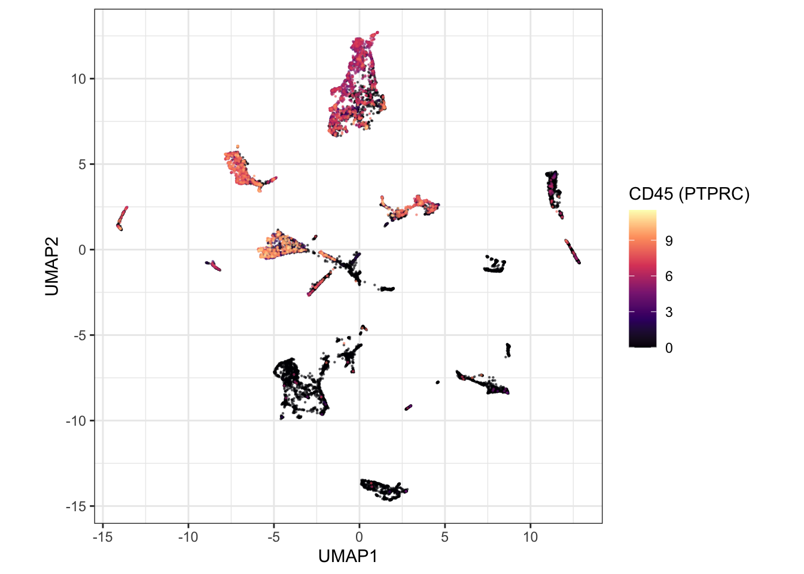

Continue in the session from Query the atlas. This block downloads a capped SingleCellExperiment, checks that immune and epithelial cells separate, and shows the same cells as a Seurat object.
library(cellNexus)
library(cellNexusWorkshop)
library(dplyr)
library(ggplot2)
library(scater)
library(scran)
library(harmony)
library(SingleCellExperiment)
library(tidySingleCellExperiment)
if (!exists("obs_lung")) {
obs_lung <- get_metadata() |>
keep_quality_cells() |>
dplyr::filter(
dataset_id %in% respiratory_dataset_ids(),
cell_type_unified_ensemble %in% c(immune_cell_types(), epithelial_cell_types()),
age_days >= 365,
age_days < 80 * 365
) |>
annotate_cell_nexus(min_cells_per_sample = 50)
}Download a SingleCellExperiment
get_single_cell_experiment() reads the count matrices
for the cells in a metadata table and returns one
SingleCellExperiment. The workshop cap keeps the download
inside a session. The example figures on this site use 12,000 cells. Set
CELLNEXUS_WORKSHOP_MAX_CELLS=12000 before this chunk to
match them. Allow several minutes, and about 32 GB of RAM for the larger
cap.
Cells are subsampled within sample, and the number of samples is capped, so a few large libraries do not dominate the highly variable genes.
max_cells_qc <- as.integer(Sys.getenv("CELLNEXUS_WORKSHOP_MAX_CELLS", "4000"))
cells_per_sample_qc <- 80L
n_samples_qc <- max(1L, max_cells_qc %/% cells_per_sample_qc)
set.seed(42)
samples_qc <- dplyr::distinct(obs_lung, sample_id)
samples_qc <- dplyr::slice_sample(samples_qc, n = min(n_samples_qc, nrow(samples_qc)))
sampled_qc <- obs_lung |>
dplyr::semi_join(samples_qc, by = "sample_id") |>
dplyr::group_by(sample_id) |>
dplyr::slice(sample.int(dplyr::n(), min(cells_per_sample_qc, dplyr::n()))) |>
dplyr::ungroup()
sce_qc <- sampled_qc |>
get_single_cell_experiment(assays = "counts") |>
logNormCounts()
sce_qcWith tidySingleCellExperiment loaded, the object prints
as a tibble and accepts dplyr verbs and
ggplot2. The underlying assay is unchanged.
sce_qc |>
dplyr::count(cell_type_unified_ensemble, sort = TRUE)Integrate studies and colour by CD45
Highly variable genes are selected per sample
(modelGeneVar(block = sample_id)), so genes that vary
within a donor rank above genes that merely differ between libraries
(Lun et al. 2016). Harmony then removes
the study axis from the PCA (Korsunsky et al.
2019). The UMAP is drawn from that embedding.
CD45 (PTPRC, Ensembl ENSG00000081237) marks
haematopoietic cells independently of the harmonised label. Immune cells
should occupy the high-CD45 region.
hvgs_qc <- sce_qc |>
modelGeneVar(block = sce_qc$sample_id) |>
getTopHVGs(n = 2000)
sce_qc <- sce_qc |>
runPCA(ncomponents = 30, subset_row = hvgs_qc) |>
RunHarmony(
group.by.vars = "dataset_id",
dims.use = 1:30,
verbose = FALSE,
reduction.save = "HARMONY"
) |>
runUMAP(dimred = "HARMONY", n_neighbors = 15)
cd45_id <- c(
grep("^ENSG00000081237(\\.|$)", rownames(sce_qc), value = TRUE),
intersect("PTPRC", rownames(sce_qc))
)
if (length(cd45_id)) {
sce_qc$cd45 <- as.numeric(logcounts(sce_qc)[cd45_id[[1]], ])
} else {
sce_cd45 <- sampled_qc |>
get_single_cell_experiment(assays = "counts", features = "ENSG00000081237")
sce_qc$cd45 <- NA_real_
i <- match(colnames(sce_qc), colnames(sce_cd45))
sce_qc$cd45[!is.na(i)] <- log1p(
as.numeric(SummarizedExperiment::assay(sce_cd45, "counts")[1, i[!is.na(i)]])
)
rm(sce_cd45)
}
sce_qc |>
ggplot(aes(UMAP1, UMAP2, colour = cd45)) +
geom_point(size = 0.3, alpha = 0.6) +
scale_colour_viridis_c(option = "magma") +
coord_equal() +
theme_bw() +
labs(colour = "CD45 (PTPRC)")
The same grammar colours the embedding by the harmonised label.
sce_qc |>
ggplot(aes(UMAP1, UMAP2, colour = cell_type_unified_ensemble)) +
geom_point(size = 0.3, alpha = 0.6) +
coord_equal() +
theme_bw() +
labs(colour = "Cell type")Exercise 4. Colour the same UMAP by
dataset_id. After Harmony, study identity should be mixed within a cell-type region. Islands that follow study boundaries are under-correction. Harmony adjusts the embedding used for the picture. It does not adjust the counts, so the models in the next two articles still includedataset_id.
Solution
sce_qc |>
ggplot2::ggplot(ggplot2::aes(UMAP1, UMAP2, colour = dataset_id)) +
ggplot2::geom_point(size = 0.3, alpha = 0.6) +
ggplot2::coord_equal() +
ggplot2::theme_bw()Mixing of colours inside a cell-type region is the pattern you want
after Harmony. A region painted by a single study is under-correction.
The expression model still includes dataset_id, because the
counts were not adjusted.
Exercise 5. Using
sce_qc, count cells percell_type_unified_ensemble. Which ofimmune_cell_types()are missing from this subsample, and what does that imply for a composition estimate built from these cells alone?
Solution
library(cellNexusWorkshop)
sce_qc |>
dplyr::count(cell_type_unified_ensemble, sort = TRUE)
setdiff(immune_cell_types(), unique(sce_qc$cell_type_unified_ensemble))Labels missing from this subsample are absent because of the cap, not
because they are absent from obs_lung. Composition in the
next article is fit on obs_lung, which keeps every cell of
every retained sample. Fitting sccomp on
sce_qc would estimate the subsample.
The same cells as a Seurat object
get_seurat() is
get_single_cell_experiment() followed by the Seurat
conversion. Pass a small metadata table. A handful of cells spread
across many files downloads a handful of files.
library(tidyseurat)
one_study <- obs_lung |>
dplyr::filter(dataset_id == dplyr::first(dataset_id)) |>
dplyr::slice_head(n = 100)
seurat_demo <- one_study |>
get_seurat(assays = "counts")
seurat_demotidyseurat gives that object the same tibble interface
you just used on the SingleCellExperiment. The rest of the workshop
stays with SingleCellExperiment, because the pseudobulk tools speak that
language.
Next: Compositional analysis.